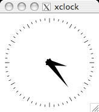
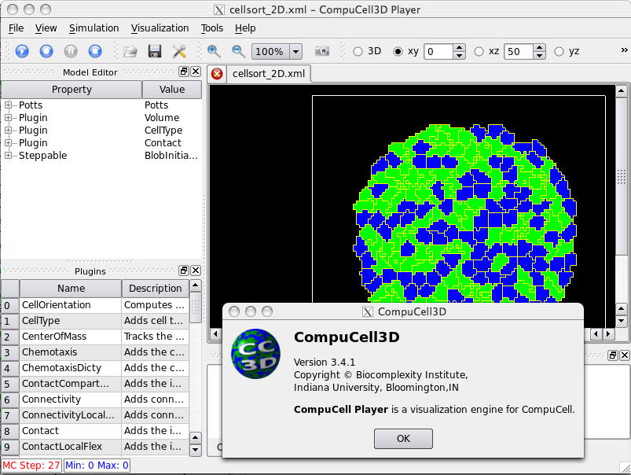

Googling 'ubuntu x forwarding' should be useful (I was looking at the 1st hit: http://www.techotopia.com/index.php/Displaying_Ubuntu_Linux_Applications_Remotely_%28X11_Forwarding%29 )
The first thing to try after ssh'ing to the server is simply 'xclock' and see if it appears on your client machine.

I was able to install cc3d onto Abbas's 64-bit 'ace' ubuntu machine from the binaries download page: Linux Distros (Version 3.4.1), Ubuntu 9.04 64Bit (Jaunty Jackalope). Then I could run cc3d on ace, at least the 2D cellsort demo, and have it update the GUI being displayed on my local machine (OSX running an X11 windows).

Getting all this to work properly may require some config params on the server (e.g. /etc/X11 and /etc/ssh/ssh_config and perhaps also on the client, 'xhost')